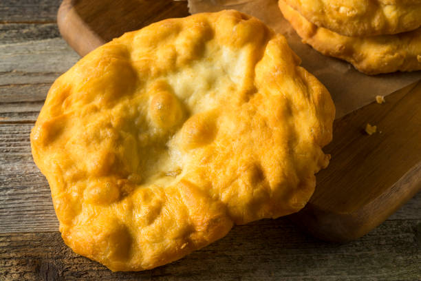

Fry Bread Recipe

Fry Bread From Scratch
This recipe will provide the batter needed to make delicious fry bread from scratch.
Ingredients
- 2 cups of flour
- 1 cup of milk
- 1 tbsp of baking powder
- 1 tsp salt
- Mix all ingredients at the same time and let rise for 1 hour.
- Heat canola oil on medium-high heat in cast iron skillet or deep pan.
- Break off pieces of dough and roll on a floured surface to desired size.
- Place in hot oil until golden brown flipping half way through.
- Will make approximately 10 medium size pieces.
- Add toppings and enjoy.